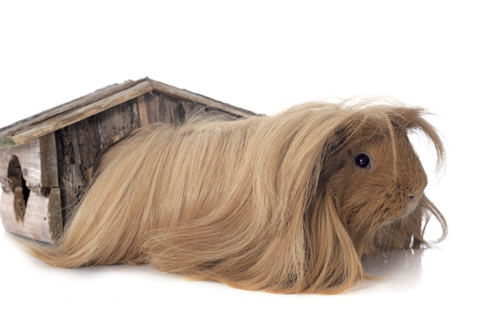
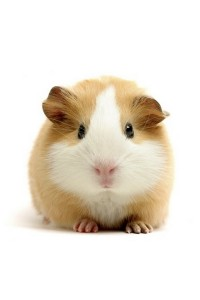

Galette est un cochon d'inde de type shelty. Un shelty est un mélange de péruvien
et d'américain. Donc, il a le poil court dans le haut du corps et vers le bas long. La
couleur de son poil est caille , cette couleur est un mélange de brun et
de roux avec des taches blanches.
Galette a été adopté le 10 février 2018, au Centre Nature de Boisbriand . Il
avait 1 mois lors de l'adoption. Il était le plus poilu et le plus gouflu de la orde.
| Péruvien | Américain |
|---|---|
|  |  |